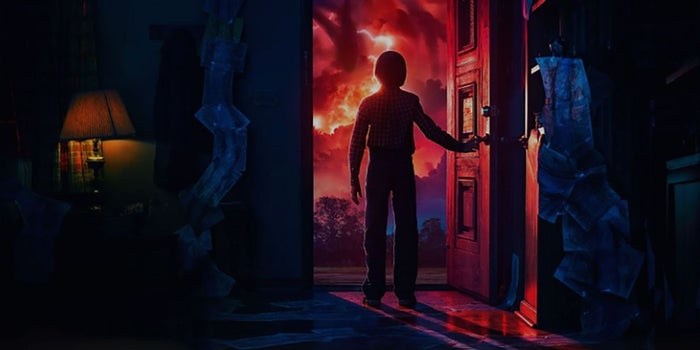
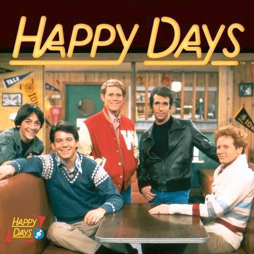

Nostalgia is a set of emotions, usually positive ones, elicited from our memories. Furthermore, this 'nostalgic media' hones on significant past events, places, songs, art styles, clothing styles, etc. in hopes of triggering nostalgia.
"Retro-gaming fan communities share, collect, and play their childhood games (e.g., Handberg, 2015; Heinemann, 2014), and numerous online communities exchange memories about media from their childhood (e.g., Kaun & Stiernstedt, 2014)."
Professor Constantine Sedikides (2018)
Tv Shows

Take a look at the TV show "Stranger Things";
it's filled with 80's themed elements and which is, no doubt, a big contributor to its success due
to the nostalgic effect it has on its viewers.
However, this idea of nostalgic media is nothing new.
“Happy Days”

is a television sitcom created by Garry Marshall in 1974. The show focused on a
culture and period of time that would be relevant and meaningful for a generation of people
growing up in the 1950s. Happy Days idolized iconic cultural hallmarks in a time of leather
jackets, diners, drive-in movies, and fashion representative of America youth culture in the
1950s. In large part, the success of this sitcom was a direct result of drawing viewership from
nostalgic experiences.
Video Games
We can also see its footprints leaking into the gaming industry with things like the release of World of
Warcraft Classic, an
official release of an older version of the game from 2006, alongside the revival of older
retro-styled games.
"Retro-gaming fan communities share, collect, and play their childhood games (e.g., Handberg, 2015; Heinemann, 2014), and numerous online communities exchange memories about media from their childhood (e.g., Kaun & Stiernstedt, 2014)."
Professor Menke (2017)
Nostalgic media is effective due to the strong emotions it can evoke from a person.